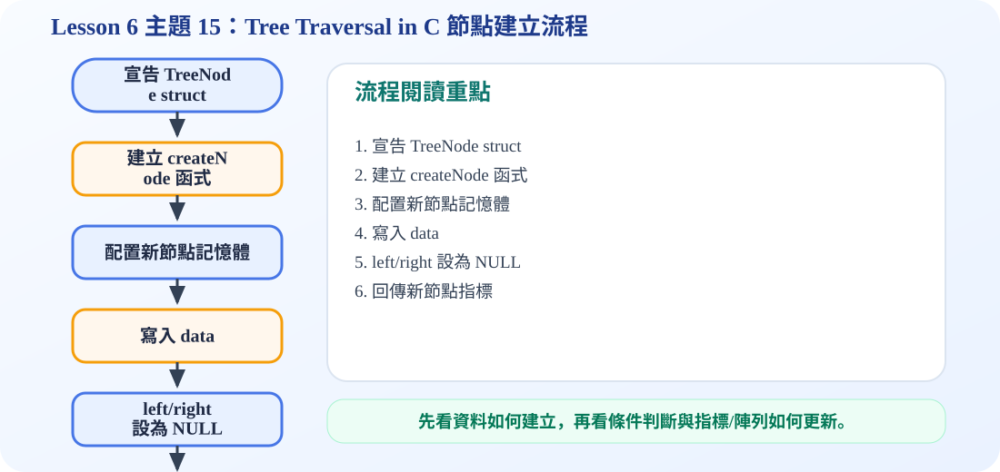

Node 結構觀念圖
C 語言沒有內建 tree，所以必須用 struct 自己定義節點，再用指標把節點串成樹。
一、struct Node 是什麼？
struct Node 是用來描述「一個樹節點」的資料型態。每個節點至少包含資料欄位 data，以及兩個指標欄位 left、right。left 指向左子節點，right 指向右子節點。
二、為什麼 left 和 right 要寫成 struct Node*？
因為 left 和 right 不是存放子節點的資料，而是存放「子節點的位置」。在 C 語言中，位置通常用 pointer 表示，所以 left 與 right 的型態會是 struct Node*。
三、createNode() 在做什麼？
createNode() 會用 malloc 配置一塊記憶體，建立一個新的節點，然後把 data 放進去，再把 left 與 right 設成 NULL。這代表新節點剛建立時還沒有孩子。
四、NULL 的意義
NULL 代表目前沒有指向任何節點。在 tree traversal 中，遇到 NULL 就表示已經走到底，所以遞迴要停止。
C 程式碼：Node 與 createNode
/*
中文註解版程式：tree_traversal_c.c
說明：主題 15/16：樹節點建立與走訪示範。建立二元樹後輸出 inorder 與 postorder。
閱讀方式：先看資料結構定義，再看操作函式，最後看 main() 如何測試。
*/
// 匯入標準輸入輸出函式庫，提供 printf / scanf 等功能。
#include <stdio.h>
// 匯入標準函式庫，提供 malloc / free / exit 等記憶體與程式控制功能。
#include <stdlib.h>
// 定義節點結構：資料欄位存節點內容，指標欄位負責連到其他節點。
typedef struct Node {
char data;
struct Node *left;
struct Node *right;
} Node;
// 建立新節點：配置記憶體、填入資料，並把左右指標初始化為 NULL。
Node* createNode(char data) {
Node* newNode = (Node*)malloc(sizeof(Node));
newNode->data = data;
newNode->left = NULL;
newNode->right = NULL;
return newNode;
}
// Inorder 走訪：Left → Visit → Right。
void inOrder(Node* root) {
if (root == NULL) return; // 遞迴終止條件：空節點不需要處理
inOrder(root->left);
printf("%c ", root->data); // 拜訪目前節點並輸出資料
inOrder(root->right);
}
// Postorder 走訪：Left → Right → Visit。
void postOrder(Node* root) {
if (root == NULL) return; // 遞迴終止條件：空節點不需要處理
postOrder(root->left);
postOrder(root->right);
printf("%c ", root->data); // 拜訪目前節點並輸出資料
}
// 主程式：建立測試資料，呼叫上方函式，觀察輸出結果。
int main() {
Node* root = createNode('A');
Node* n1 = createNode('B');
Node* n2 = createNode('C');
Node* n3 = createNode('D');
Node* n4 = createNode('E');
Node* n5 = createNode('F');
root->left = n1;
root->right = n2;
n1->left = n3;
n1->right = n4;
n2->right = n5;
printf("Inorder traversal: ");
inOrder(root);
printf("\n");
printf("Postorder traversal: ");
postOrder(root);
printf("\n");
return 0;
}
可編輯 C 程式範例：含中文註解與線上編輯器
這一段提供可直接修改的 C 程式碼。可以按「複製程式」貼到線上編輯器執行，也可以下載 .c 檔案。
程式題目教學內容：Tree Traversal in C：節點建立
一、程式題目講解
本題示範二元樹節點的建立與連接，並用走訪函式檢查節點是否正確接成樹。學生需要理解 struct Node、指標與 createNode() 的作用。
二、完整程式碼
完整可執行程式碼已保留在上方「可編輯 C 程式範例：含中文註解與線上編輯器」區塊中，檔名為 tree_traversal_c.c。該程式碼已加入中文註解，學生可以直接複製到 OnlineGDB、Programiz 或 OneCompiler 執行。
三、程式執行結果
Inorder traversal: D B E A C F
Postorder traversal: D E B F C A Inorder 與 Postorder 的輸出顯示樹已成功建立。Inorder 依左、根、右順序拜訪；Postorder 則將 root A 放在最後輸出。
四、程式流程圖與流程圖說明
本頁下方已保留原本的程式流程圖。閱讀流程圖時，可以依序掌握「初始化資料或節點 → 執行主要函式或判斷 → 輸出結果」的過程。先定義 Node 結構，再用 createNode 建立 A 到 F 節點，接著用 left、right 指標把節點接成樹，最後呼叫走訪函式輸出結果。
五、重要函數與語法說明
typedef struct Node：定義節點型別；createNode()：配置與初始化節點；malloc()：取得節點記憶體；inOrder() / postOrder()：驗證樹的連接與走訪順序。
六、整體說明
本題重點是二元樹在 C 語言中通常靠 struct 與指標建立；節點連接正確，走訪輸出才會符合預期。
程式流程圖：Tree Traversal in C 節點建立流程
下圖是本主題對應的程式執行流程，適合搭配本頁 C 程式碼一起看。

流程講解
- C 程式會先定義 TreeNode，包含 data、left、right。
- createNode 負責 malloc 記憶體並初始化欄位。
- left 與 right 一開始設為 NULL，避免野指標。
- main 再利用回傳的指標把節點接成樹。
這張流程圖把本頁程式的執行順序整理成一條清楚路徑。閱讀時先看輸入與資料如何建立，再看條件判斷、指標或陣列索引如何改變，最後用輸出結果確認程式邏輯是否正確。